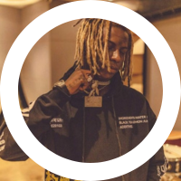

Yunk Vino
Vino é natural de Carapicuíba, SP. O jovem de 23 anos começou sua carreira musical em 2018 de forma bem independente. Em 2019 ele abriu um show do Racionais em Curitiba ao lado do rapper AKA RASTA. Em 2020 ele entrou para o cast do selo musical Labbel Records. Em fevereiro deste ano ele lançou seu primeiro trabalho 237 e em junho ele lançou a versão 237 Deluxe. Hoje seu canal no Youtube soma mais de 100 milhões de visualizações. Yunk Vino é um dos nomes mais reconhecido do Trap nacional atualmente..